Mood Dial
Objective
While tech-reliant professionals people may aspire to declutter their life from non-essential distractions such as social media, it's difficult for busy people to pick up the best practices to stay focused on their priorities. The goal of this solution is to provide users more self-awareness to their aspirations and everyday routines, resulting in improved mindfulness on what technologies support their goals, wellbeing, and state of mind.
Project scope + deliverable
Mood Dial is a solution that blocks technology-driven notifications and distractions while also supports usage reporting and goal setting across multiple devices. This work was generated as part of a University of Michigan, School of Information course titled SI 582: Introduction to Interaction Design. Through active examination and practice of design methods and thinking, the end result is a working mid-fi prototype at course completion.
Phase 1: Conceptualization and research
- Academic literature review
- Competitive analysis
- User research interviews
Phase 2: Idealization
- Sketching
- Storyboards
- Persona development
- QOC
- Scenarios
- Storymaps
- User flow diagrams
Phase 3: Prototyping and testing
- Lo-fi prototypes
- Mid-fi prototypes
- Accessibility review
- User testing
My role
This was an individual project brought from conception to prototype by me&period
Phase 1: Conceptualization and research
Background research
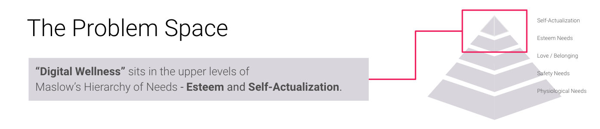Digital technology is not a basic need. Humans are able to operate physically and safely without access to digital devices or applications. The development of technological assistance bolsters Esteem, whereas technology optimization approaches Self-actualization, allowing people to meet their full potential. Academic literature around productivity and multitasking shows that while some people pride themselves in being “good multitasker,” research shows that there is no good “multitasking.” Additionally, “flow” may be improved by narrowing attentional focus and stimuli to one specific subject and exercising control over technology interactions. When examining current world views (causal layered analysis), there is a growing sentiment among users around fear of technology reliance and sensory overload, particularly with social media.
Competitive analysis
There are many competitors that seek to improve productivity by blocking notifications or limiting app usage, such as Focus Mode. This places more importance toward positioning in order to differentiate future products from current options. The competitive analysis shows growth opportunities in the following areas:
- Inter-platform connectivity (available for iOS, Android, and everything in between)
- Goal setting
- Calendar integrations and other “intelligent” assistance
Competitive analysis
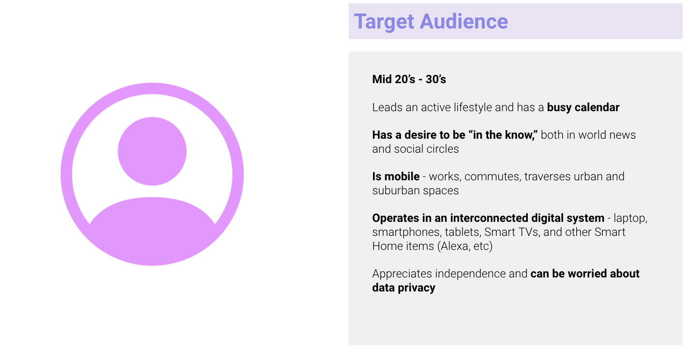5 individual interviews were conducted with participants that met the target audience above. The interviews sought to understand:
- User sentiments toward technology
- How they're currently managing digital multitasking
- Initial thoughts on the product concept
Synthesis and insights
Two types of users
- Those bad at self-moderating device multitasking
- Focused thinkers (consciously concentrates on one task but sometimes must move "out of flow" for urgent email/messages)
Device Interconnection + Ease of Setup
- 4-9 “smart devices” per household
- Ease of setup and how they “fit” into their other existing devices are important considerations when making new technology purchases.
General Thoughts on Technology
- Technology itself, when leveraged for good, is necessary and powerful.
- Applications are tools that should be opt-in, not pervasive.
- Social media holds a stigma as anxiety-drawing due to an echo chamber of opinions.
- Technology shouldn't only be about productivity, it should be fun too.
Phase 2: Ideation
Personas
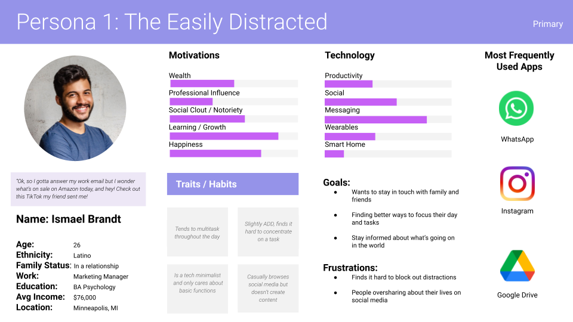 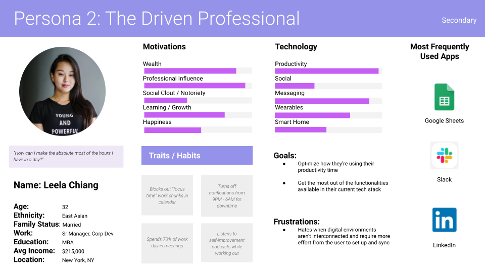 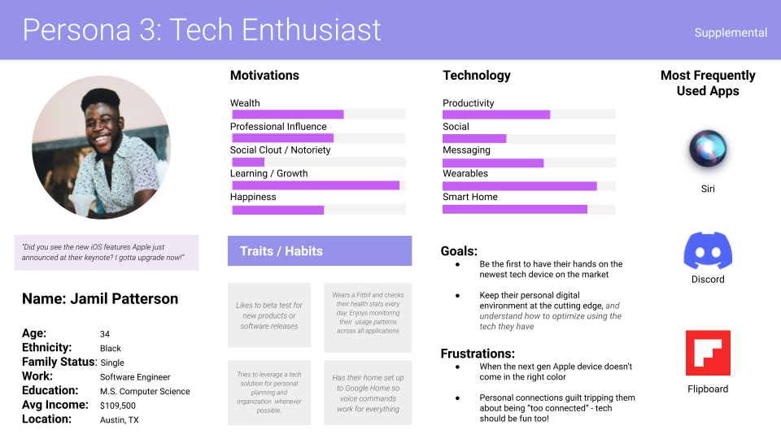 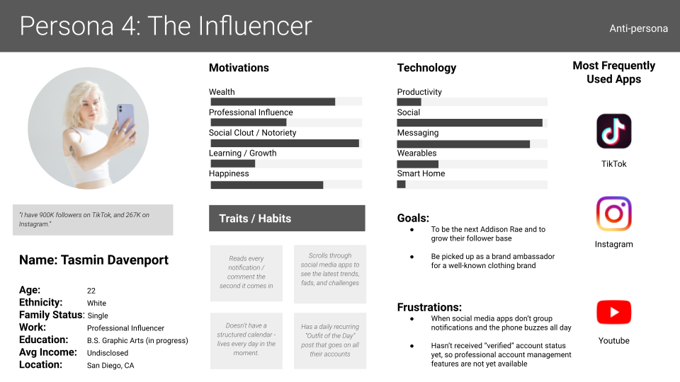User story map
Based on the developed personas, identified user activities include:
- Sign up and account setup
- Short term goals - using a profile to meet needs within a period of hours
- Long term goals - setting up your technology ecosystem to meet long-term aspirations
- Review current usage patterns
- Update profile settings
- Adjust devices connected to account
User process flow
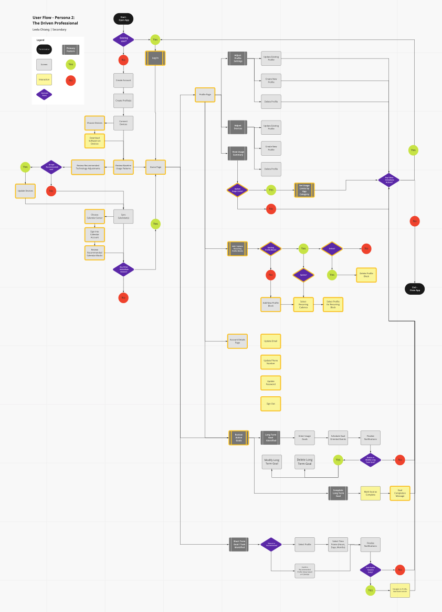QOC (Questions, options, and criteria)
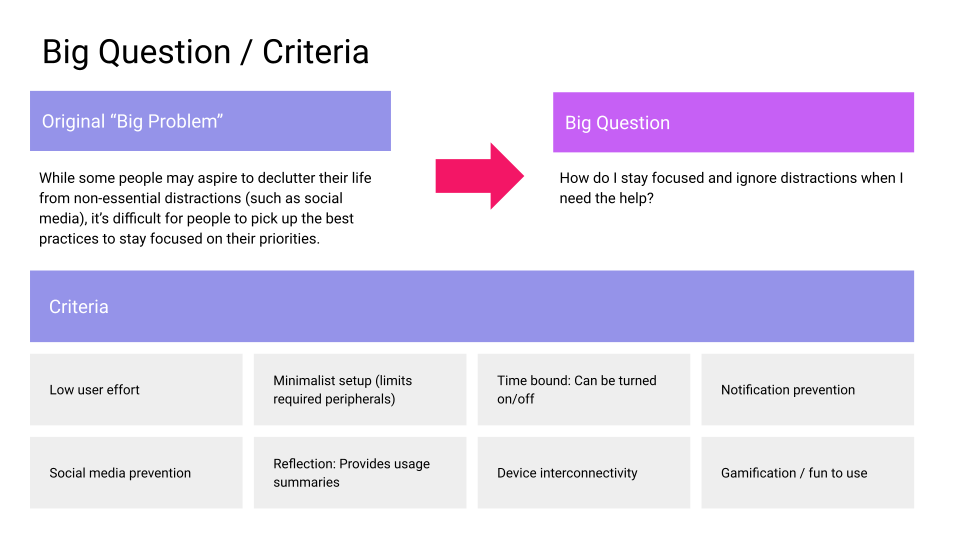 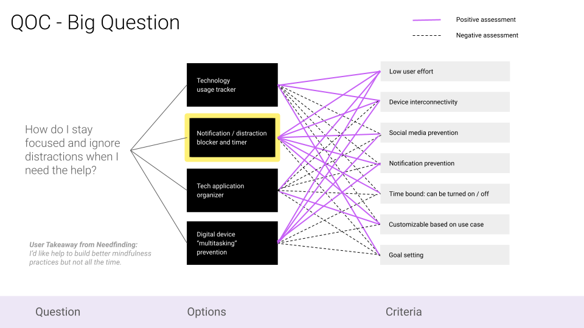Scenarios
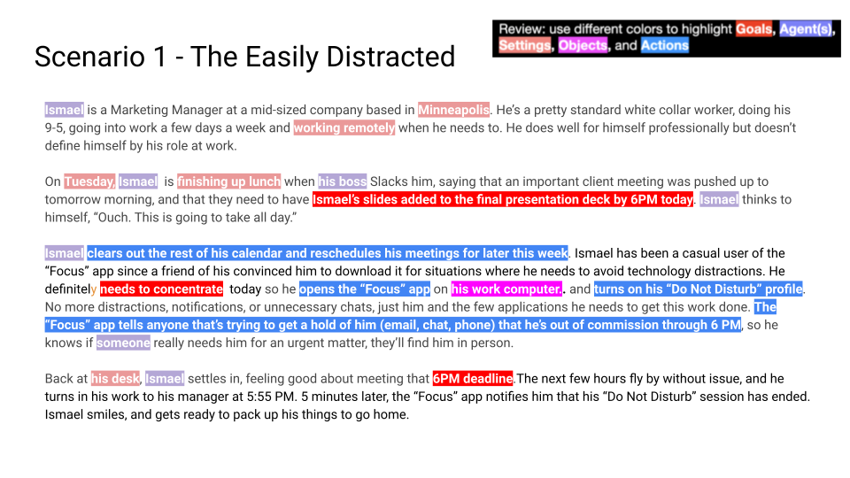 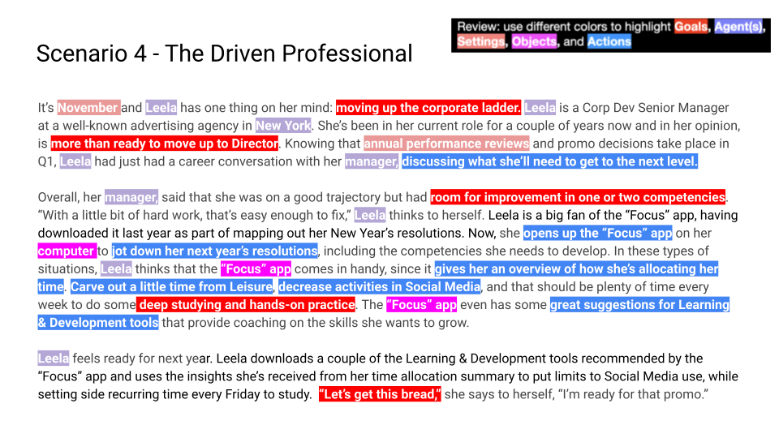 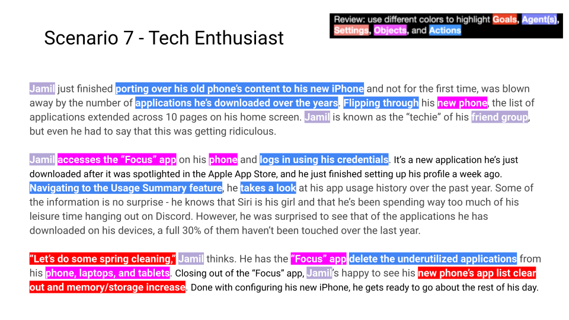Feature requirements
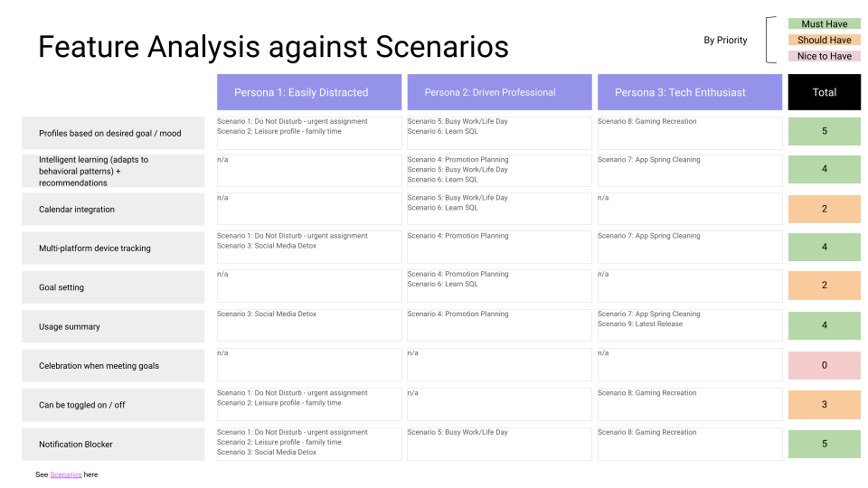Phase 3: Prototyping
Low | Mid-Fi Prototype
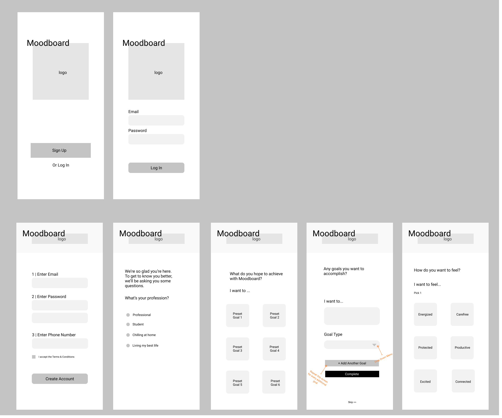User testing
Areas for refinement
- Confusing language made completing tasks for “Create New Usage Profile” and “Add Device” difficult to complete.
- Preference by users to use Back Button vs bottom navigation bar - low engagement with Home screen
- The current calendar timeline functionality (click and drag to create event) is not intuitive - should incorporate more traditional type-in / scroll function for Date / Time selection.
- There were some Figma glitches with the prototype flow - will need to refine before moving to Mid-Fi testing.
Final design
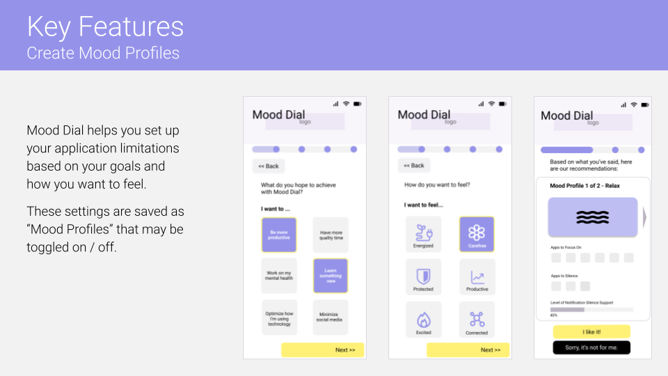 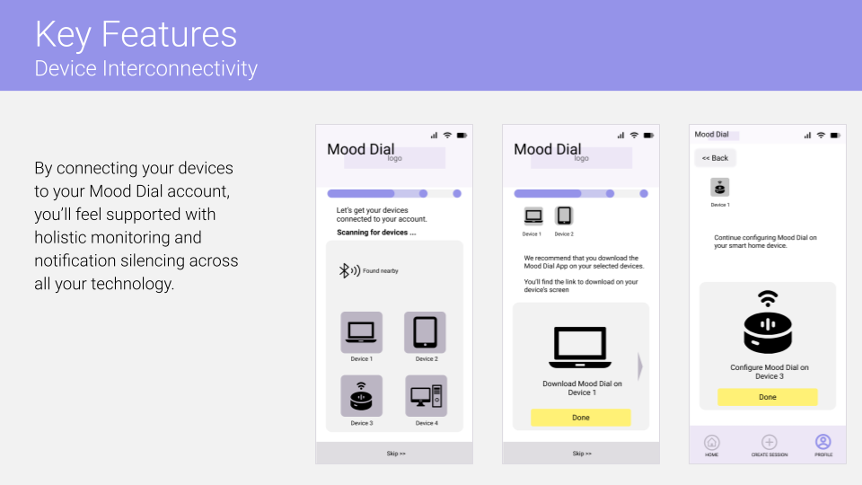Prototype
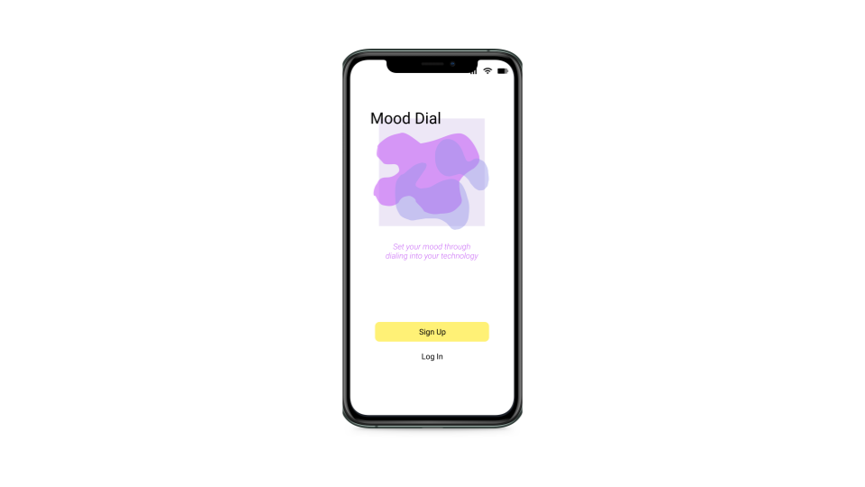 Click the image of Mood Dial's log in screen to access the working Figma prototype
Future opportunities
Household device management
Similar to Android's Digital Wellbeing product product, how might we allow a user to control the technology of multiple users in order to encourage their household to practice healthy technology usage?
Technology access for pure mood-setting
Mood Dial is named this way because it wants to “set the mood.” How might we decouple mood-setting from goal setting? For instance, there's a growing trend in the event planning space where “technology free” zones are being implemented in order to keep people in the moment. Can Mood Dial be used to calibrate a “mood” across a large group of people?